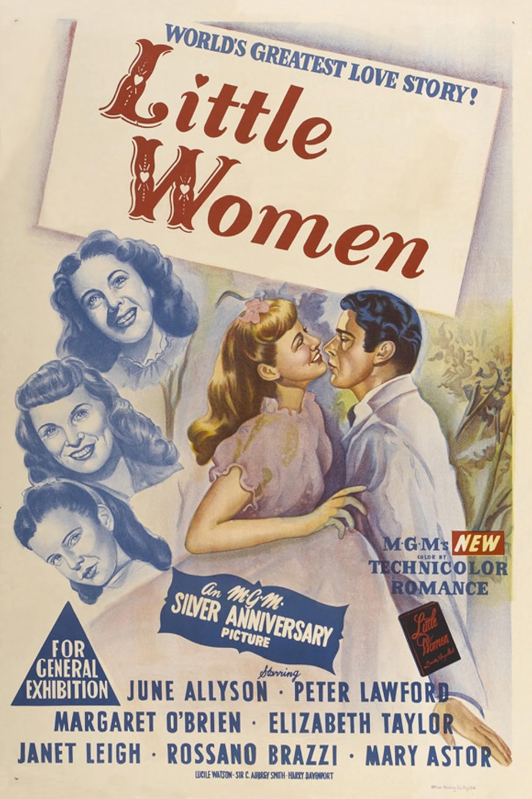

Little Women
22nd Academy Awards
(Oscars 1950)
2 Nominations, 1 Award
| Nominations | ||
|---|---|---|
| Category | Nominees | Result |
| Cinematography (Color) | Charles Schoenbaum and Robert Planck | Nominated |
| Art Direction (Color) | Cedric Gibbons, Edwin B. Willis, Jack D. Moore, and Paul Groesse | Won |